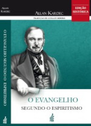
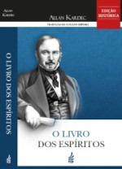
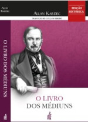
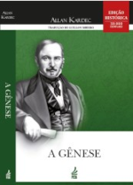
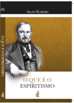
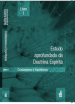
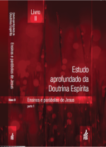
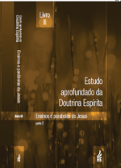
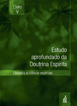

Livro da semana...
Acompanhe as dicas e sugestões de leitura da nossa Livraria Espírita Irmão Osvaldo.
Sugestão da semana:
Livros do Codificador Allan Kardec que a FEB traz para você, prezado leitor. Acesse, leia e divulgue!
|  | “O Evangelho segundo o Espiritismo” é um dos cinco livros que constituem o corpo doutrinário do Espiritismo. “O Evangelho segundo o Espiritismo” é o ensino moral do Cristo Jesus para os cristãos de qualquer crença, desenvolvido pelos Espíritos de Luz em comunicações mediúnicas recolhidas, organizadas, comentadas e trazidas a público pelo Codificador Allan Kardec. Se o leitor é cristão, leia com aplicação o ensino moral do Mestre Jesus para a Humanidade sofredora e dê-se conta de conteúdos que talvez nunca antes tenha percebido, ou compreendido plenamente. Se não é cristão, mas um espírito indagador, leia com respeito a orientação desse Espírito divino, dada há dois mil anos e sempre atual, em seu caráter educativo, motivador e consolador. |
|  | Dos cinco livros fundamentais que compõem a Codificação do Espiritismo, este foi o primeiro, reunindo os ensinos dos Espíritos Superiores através de médiuns de várias partes do Mundo. Ele é o marco inicial de uma Doutrina que trouxe uma profunda repercussão no pensamento e na visão de vida de considerável parcela da Humanidade, desde 1857, data da primeira edição francesa. Estruturado em quatro partes e contendo 1.019 perguntas formuladas pelo Codificador, aborda os ensinamentos espíritas, de uma forma lógica e racional, sob os aspectos científico, filosófico e religioso. Independentemente de crença ou convicção religiosa, a leitura de “O Livro dos Espíritos” será de imenso valor para todos, porque trata de Deus, da imortalidade da alma, da natureza dos Espíritos, de suas relações com os homens, das leis morais, da vida presente, da vida futura e do porvir da Humanidade, assuntos de interesse geral e de grande atualidade. |
|  | “O Livro dos Médiuns” é uma das cinco obras que constituem a Codificação da Doutrina Espírita. Reúne “o ensino especial dos Espíritos sobre a teoria de todos os gêneros de manifestações, os meios de comunicação com o mundo invisível, o desenvolvimento da mediunidade, as dificuldades e os tropeços que se podem encontrar na prática do Espiritismo”. Apresenta ainda, na parte final, precioso vocabulário básico espírita. De leitura e consulta indispensável para os espíritas, será sempre uma preciosa fonte de conhecimento também para qualquer pessoa indagadora e atenta ao fenômeno mediúnico, que se manifesta crescentemente no mundo inteiro, dentro ou fora das atividades espíritas. Sendo os homens parte integrante do intercâmbio entre os dois planos da vida o material e o espiritual, o melhor é que conheçamos, e bem, os mecanismos desse relacionamento. “O Livro dos Médiuns” é o manual mais seguro para todos os que se dedicam às atividades de comunicação com o Mundo Espiritual. |
| Esta é uma das cinco obras básicas que compõem a Codificação do Espiritismo. Seu principal escopo é explicar a Justiça de Deus à luz da Doutrina Espírita. Objetiva demonstrar a imortalidade do Espírito e a condição que ele usufruirá no Mundo Espiritual, como conseqüência de seus próprios atos. Divide-se em duas partes: A primeira, estabelece um exame comparado das doutrinas religiosas sobre a vida após a morte. Mostra fatos como a morte de crianças, seres nascidos com deformações, acidentes coletivos e uma gama de problemas que só a imortalidade da alma e a reencarnação explicam satisfatoriamente. Kardec procura elucidar temas como: anjos, céu, demônios, inferno, penas eternas, purgatório, temor da morte, a proibição mosaica sobre a evocação dos mortos, etc. Apresenta, também, a explicação espírita contrária à doutrina das penas eternas. A segunda parte, resultante de um trabalho prático, reúne exemplos acerca da situação da alma durante e após a desencarnação. São depoimentos de criminosos arrependidos, de espíritos endurecidos, de espíritos felizes, medianos, sofredores, suicidas e em expiação terrestre. Livros da Codificação Espírita: O Livro dos Espíritos, 1857; O Livro dos Médiuns, 1861; O Evangelho segundo o Espiritismo, 1864; O Céu e o Inferno, 1865; A Gênese, 1868. | |
|  | É uma das cinco obras básicas da Codificação do Espiritismo. É um livro que, conhecido e estudado, proporciona uma oportunidade excepcional de imersão em grandes temas de interesse universal, abordados de forma lógica, racional e reveladora. Divide-se em três partes: Na primeira parte, analisa a origem do planeta Terra, de forma coerente, fugindo às interpretações misteriosas e mágicas sobre a criação do mundo; Em sua segunda parte, aborda a questão dos milagres, explicando a natureza dos fluidos e os fatos extraordinários contidos no Evangelho; Na terceira parte enfoca as predições do Evangelho, os sinais dos tempos e a geração nova, que marcará um novo tempo no Mundo com a prática da justiça, da paz e da fraternidade. Os assuntos apresentados nos dezoito capítulos desta obra têm como base a imutabilidade das grandiosas Leis Divinas. |
| Obra publicada após a desencarnação de Allan Kardec, apresenta, no começo, bem escrita biografia do Codificador, seguida do discurso que Camille Flammarion pronunciou quando do seu sepultamento. Reunindo importantes registros deixados por Allan Kardec, acerca de pontos doutrinários e fundamentação do Espiritismo, divide-se este trabalho em duas grandes partes. A primeira aborda assuntos como: caráter e conseqüências religiosas das manifestações dos Espíritos; as cinco alternativas da Humanidade; questões e problemas; as expiações coletivas; liberdade, igualdade, fraternidade; música espírita; a morte espiritual; a vida futura A segunda inclui apontamentos em torno da iniciação espírita e o roteiro missionário de Kardec, assim como uma “exposição de motivos”, apresentada na “Constituição do Espiritismo”, como precioso legado do mestre lionês às sociedades espíritas do futuro. | |
|  | Obra sempre atual, útil aos adeptos da Doutrina Espírita, como também àqueles que desejam conhecer a natureza do Espiritismo e a definição de seus pontos fundamentais. A lógica e o bom senso de Allan Kardec aí se evidenciam, desconcertando os negativistas e clareando as indagações dos que acreditam e aspiram à vida superior. Divide-se em 3 capítulos: O primeiro, sob a forma de diálogos com um crítico, um céptico e um padre, traz respostas àqueles que desconhecem os princípios básicos da Doutrina, bem como apropriadas refutações aos seus contraditores. O segundo capítulo, expõe partes da ciência prática e experimental, caracterizando-se como um resumo de O Livro dos Médiuns. No terceiro capítulo, é publicado o resumo de O Livro dos Espíritos, com a solução, apontada pela Doutrina Espírita, de problemas de ordem psicológica, moral e filosófica. Contém também a biografia de Allan Kardec, por Henri Sausse. |
Estudo Aprofundado da Doutrina Espírita
|  | EADE - Livro I: Cristianismo e Espiritismo |
|  | EADE - Livro II: Ensinos e parábolas de Jesus - Parte 01 |
|  | EADE - Livro III: Ensinos e parábolas de Jesus - Parte 02 |
| EAED - Livro IV: Consolador Prometido por Jesus | |
|  | EADE - Livro V: Ciência e Filosofia Espíritas |
* Para visualizar os livros ou fazer o download, basta clicar na referida capa.